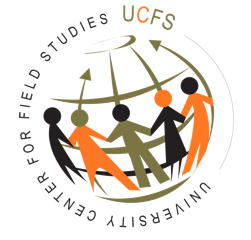

Sixteen additional cases were excluded after duplicate-ID and identity-confirmation review.
CYPRUS PUBLIC OPINION OBSERVATORY · FINAL v4
Substance, Process, Hopes and Concerns
An In-depth Exploration of Greek Cypriot Perspectives on the Cyprus Issue
A scientific observatory integrating weighted survey evidence, qualitative reasoning, latent profiles, message testing, predictive modelling and presidential conjoint analysis.
Lead institution
Research centre

Academic affiliation
Evidence framework
Six connected dimensions of public opinion
The Observatory is organised according to the research logic of the questionnaire rather than the order in which statistical modules were produced.
01SubstanceSolution forms, BBF knowledge, status quo and Crans-Montana fairness
02Hopes & ConcernsPre/post expectations, fears and open-ended reasoning
03ProcessHow negotiations should proceed and why
04Psychological ReadinessLatent readiness and hope–fear profiles
05Intergroup RelationsContact, warmth, party, district and displacement
06Political Leadership & RepresentationGender attitudes, political behaviour and candidate preferences
Chapter 1
Substance
How Greek Cypriots evaluate constitutional alternatives, the fairness of the present situation, knowledge of BBF and the negotiating record.
92.4%judge the status quo unfair
75.3%accept or tolerate BBF
70.3%accept or tolerate a unitary state
33.3%accept or tolerate a two-state solution
Chapter 2
Hopes & Concerns
What citizens hope a settlement could deliver, what they fear, and how those expectations shift after message exposure.
39.0%report no hopes after messages
30.3%hope for youth employment after messages
41.8%hope for freedom of movement and settlement
45.5%fear political deadlock and dysfunction
Chapter 3
Process
Preferred routes for renewed negotiations, including Crans-Montana, citizen assemblies, staged implementation and non-resumption.
82.8%prefer an active negotiation route
38.7%restart from Crans-Montana
22.2%prefer citizen assemblies
17.2%prefer not to restart negotiations
Chapter 4
Psychological Readiness
Four latent readiness profiles and four hope–fear configurations estimated with the final v4 sample and weights.
38.6%Conditional Pragmatists
34.4%Hopeful Supporters
22.0%Concerned Opponents
47.5%Low-Hope Selective Concern profile
Chapter 5
Intergroup Relations
Contact with Turkish Cypriots, affective warmth and differences by party, district and displacement background.
51.7%report no contact
15.9%have monthly or more contact
57.5mean warmth on a 0–100 scale
r = .327weighted contact–warmth association
Chapter 6
Political Leadership & Representation
Gender stereotypes, representation policies, political behaviour and the democratic context of presidential leadership.
88.6%reject “women should stay at home”
52.2%support gender quotas
88.1%support stronger penalties for violence
4.42/5mean gender egalitarianism
Advanced analyses
Why these patterns emerge
Integrated models connect profiles, messages, attitudes and political choice.
Advanced 1Paired Message TestingTwenty separate pro-versus-anti BBF contests
Advanced 2Predictors of SupportWeighted models of baseline, post-message and BBF acceptance
Advanced 3Integrated Psychological ModelAssociational pathways from contact and legitimacy to support
Advanced 4Presidential Candidate ConjointAMCEs, marginal means and candidate-profile simulator
77.2%pro share for local and buffer-zone development
+11.4 pppreference effect for a senior party official
−12.0 pppenalty for prioritising the Cyprus settlement over cost of living
Research design, methods and transparency
Final v4 methodological disclosure
Calibrated to CYSTAT 2021 age, gender and QD5 current district of residence.
Kish design effect 1.86; design-adjusted precision benchmark approximately ±4.8 percentage points.
Self-administered online-panel questionnaire among resident adult Greek Cypriots.
Favourable opinion from the Cyprus National Bioethics Committee prior to fieldwork.
Professor of Social and Developmental Psychology, University of Cyprus; Director, UCFS.
Scientific repository
Final v4 workbooks
The respondent-level dataset is not included. Public downloads contain aggregate analyses, methodology and survey instruments only.